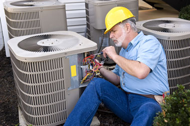

Minuteman Heating & Air Serves Fort Worth, Arlington, Aleda, Alvarado and the surrounding areas with first quality services you can rely upon. Our certified technicians have the experience necessary to ensure a professional repair, installation and maintenance of your heating and air conditioning system, and the skills needed to ensure the job is done right the first time. You are our first priority, and we are dedicated to your comfort and satisfaction. Contact us today to schedule your service, or a free estimate for a new HVAC system for residential or commercial applications.
OUR SERVICE AREA

Helpful Heating and Air Articles

Before the not-so-cold winter arrived in Arlington this year, we were looking at the importance of heating, ventilation and air conditioning (HVAC) contractors. In this...
Read More
Uneven heat. It may be the No 1 complaint among Arlington homeowners all winter, no matter how cold it is. Many people who have multi-level...
Read More
Fortunately for Arlington homeowners, the winter of 2016 has been, for the most part pretty darn warm (knock on wood). There's still some cold days.
Read More